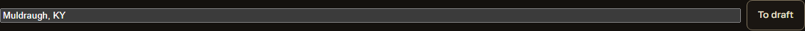
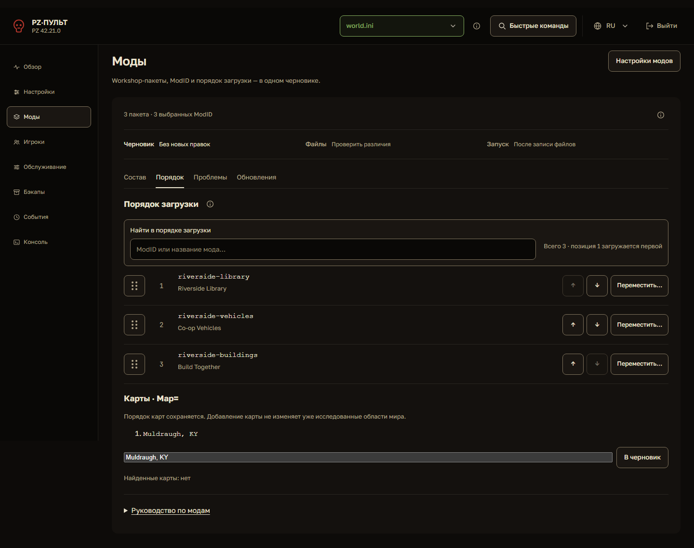
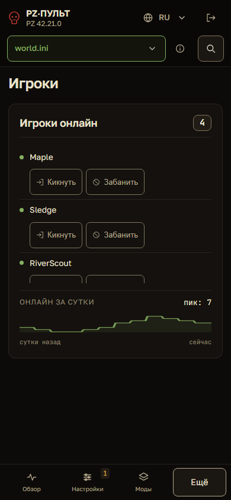
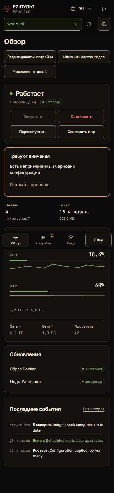
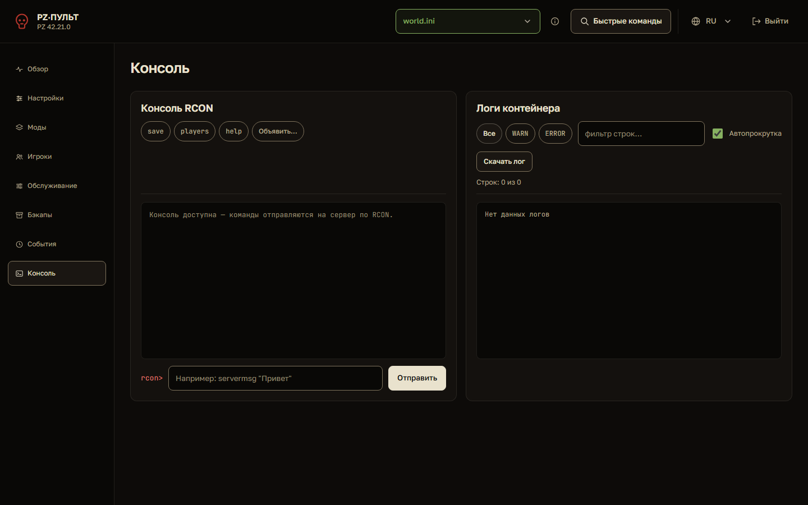
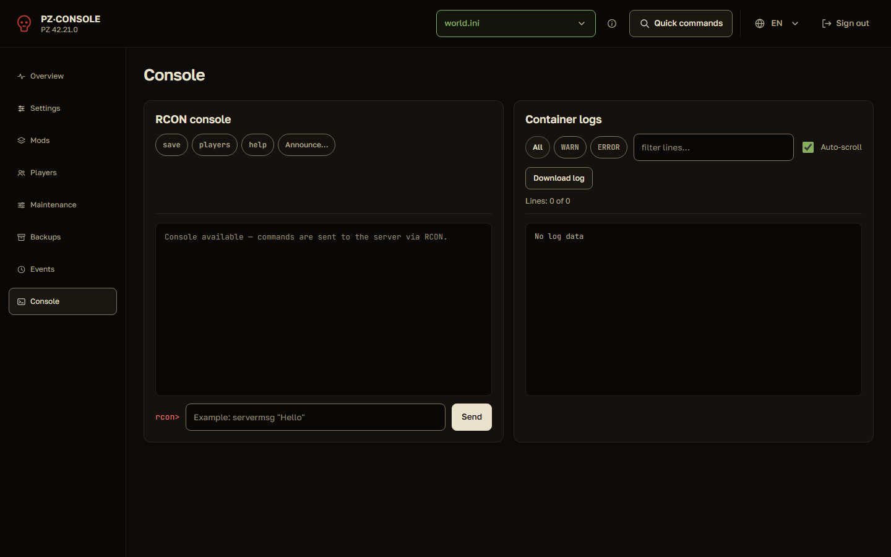
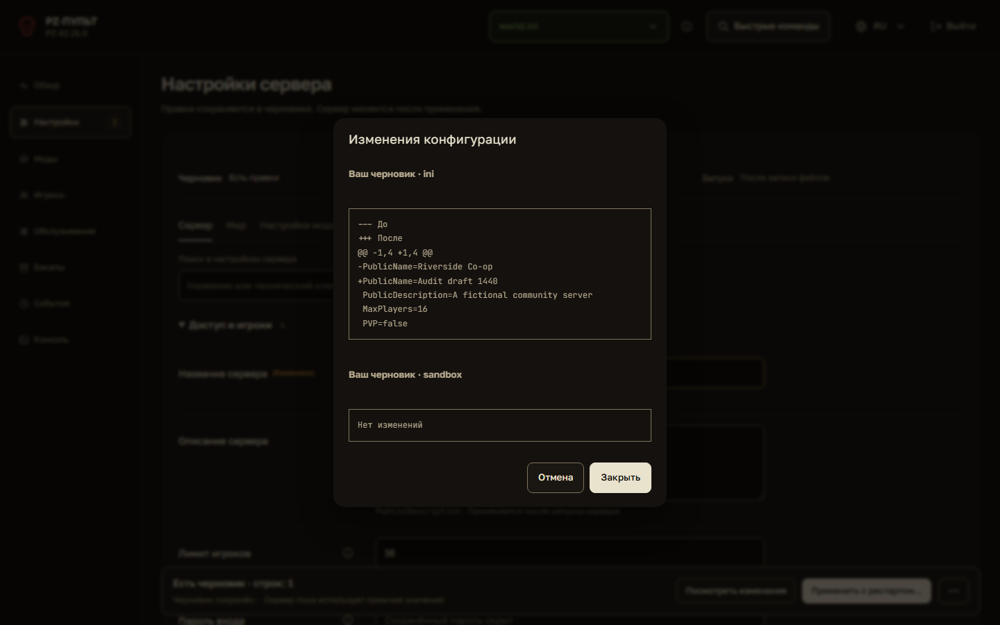
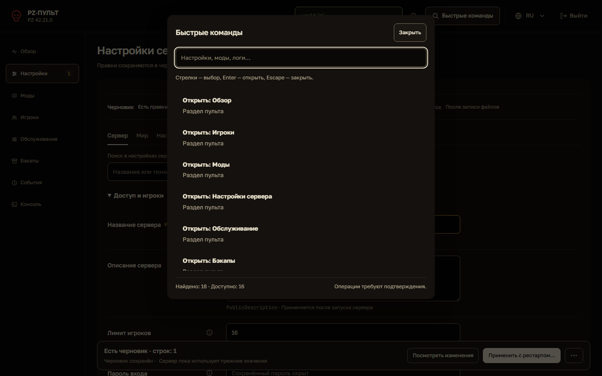
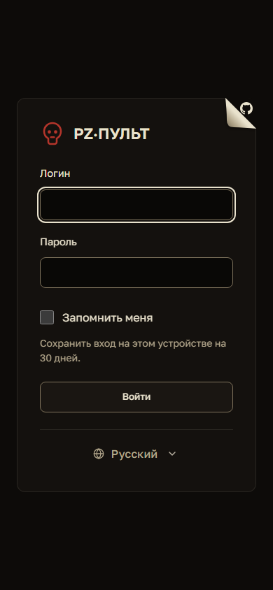

Аудит соответствия общему визуальному стилю
Все 8 пунктов исправлены по четырём предложенным этапам. Коммиты, результаты проверки и снимки после исправлений. Ниже сохранён исходный аудит версии f707b18.
PZ Console · 7 октября 2026 · 8 расхождений: P1 — 1, P2 — 5, P3 — 2.
Основной стиль целостен. Главные отклонения возникают там, где общий компонент не охватывает конкретный элемент: поле карт, шрифты кнопок и ID, опасные действия. Остальные пункты относятся к визуальному ритму и согласованности соседних поверхностей.
Соответствие визуальному стилю DESIGN.md и действующему интерфейсу. Аудит без изменения приложения.
Версия исходников: f707b183157fd2403fb413a4087fe1d96c785810. Приоритет P1 — значимый риск распознавания; P2 — следующий проход по согласованности; P3 — заключительная полировка. Блокирующих P0 в рамках этого визуального аудита не найдено.
Эталон сравнения
Тёплые тёмные поверхности, бежевый текст, Golos Text для интерфейса, JetBrains Mono для кода и ID, оливковые успешные состояния, янтарные предупреждения, кирпично-красные опасные действия. Спокойные плоские рабочие области; приподнятые временные панели.
Основание: PRODUCT.md, DESIGN.md и актуальные вычисленные стили. Палитра, основная типографика, активный профиль, локальные шрифты, плоские вкладки редакторов и отсутствие теней у постоянных рабочих областей уже согласованы.
| Приоритет | Расхождение | Где |
|---|---|---|
| VS-01 · P1 | Опасные действия не выделены до наведения | Игроки → Забанить; Бэкапы → Удалить архив. Дополнительно обычный prompt rcon> красный. |
| VS-02 · P2 | Поле списка карт осталось стандартным полем браузера | Моды → Порядок → Карты · Map= |
| VS-03 · P2 | Часть интерфейса использует случайные шрифты | Кнопки кика/бана; ModID в раскрытом пакете и порядке загрузки; названия карт. |
| VS-04 · P2 | «Ещё» выглядит отдельной большой кнопкой в нижней навигации | Мобильная нижняя панель на всех разделах. |
| VS-05 · P2 | Поиск порядка модов использует более тяжёлое оформление | Моды → Порядок, сравнение с Составом и поиском настроек. |
| VS-06 · P2 | Шапка консоли содержит большой пустой участок | Консоль на desktop шире 1180px. |
| VS-07 · P3 | Диалоги используют разные заголовки и формы | Обычные модальные окна, diff и быстрые команды. |
| VS-08 · P3 | На офлайн-странице нарушен ритм шапки и переключателя языка | Страница «Нет связи с пультом». |
VS-01 · P1 · Опасные действия не выделены до наведения
Нарушение семантики цвета · Игроки → Забанить; Бэкапы → Удалить архив. Дополнительно обычный prompt rcon> красный.
Что видно. У .icon-btn.danger красный цвет задан только в :hover. В обычном состоянии бан имеет тот же цвет rgb(179,167,140) и границу rgb(128,116,93), что и кик. На сенсорном экране наведения нет. При этом безопасный rcon> использует danger-text.
Почему исправлять. Цвет перестаёт последовательно обозначать риск. Подтверждение действий уже есть; проблема относится к их визуальному распознаванию до открытия диалога.
Предлагаю. Задать базовый danger-вариант для icon-btn: danger-text, прозрачный фон и спокойная красная граница. Объединить его с семантикой .btn.danger, сохранить отдельный hover/focus. Обычный rcon> перевести в muted или ink. Не красить все вторичные команды и кик автоматически.
Готово, когда. Бан и удаление распознаются как опасные без hover; обычный prompt нейтрален; подтверждение и поведение действий сохранены.
Источники: dashboard/static/style.css:784, dashboard/static/style.css:801, dashboard/static/style.css:1010, dashboard/static/app.js:1119, dashboard/static/app.js:1590
Снимки для сравнения


VS-02 · P2 · Поле списка карт осталось стандартным полем браузера
Подтверждённый дефект оформления · Моды → Порядок → Карты · Map=
Что видно. #mapList создаётся без атрибута type, а общая стилизация выбирает input[type=text]. Chromium на desktop показывает высоту 21px, Arial 13.33px, серый фон rgb(59,59,59), белый текст и radius 0 вместо тёмного поля высотой 44px с радиусом 8px.
Почему исправлять. Поле выглядит как незавершённый или чужой элемент; отличается по размеру и области взаимодействия от соседней кнопки «В черновик».
Предлагаю. Добавить type=text и подключить общий компонент текстового поля. Сделать общий селектор устойчивым к input без type, исключая checkbox/radio/file и другие специальные контролы. Сохранить список карт и порядок значений без изменений.
Готово, когда. 44px на desktop/mobile, bg-deep, ink, общий бордер и 8px; видимый focus; поле и кнопка выровнены на 320/390/1440px.
Источники: dashboard/static/editor.js:406, dashboard/static/style.css:601
Снимки для сравнения




VS-03 · P2 · Часть интерфейса использует случайные шрифты
Подтверждённый дефект типографики · Кнопки кика/бана; ModID в раскрытом пакете и порядке загрузки; названия карт.
Что видно. Кнопки player-action вычисляются как Arial 13.33px/400. Элементы code в порядке, пакетах и картах — generic monospace 14.5px. Редактор исходников и метрики уже используют JetBrains Mono, а основные кнопки — Golos Text.
Почему исправлять. Одинаковые сущности выглядят по-разному в соседних представлениях; толщина и ширина текста зависят от браузерных шрифтов.
Предлагаю. Ввести общий font для icon-btn/player-action через типографику кнопки. Назначить code семейству font-mono или использовать единый класс для технического ID; размер выбирать по роли, сохранив 12px у технических ключей форм и 13px у основных ID. Не переносить моноширинный шрифт на обычные названия модов.
Готово, когда. Все текстовые кнопки используют Golos Text; ModID и карты используют JetBrains Mono в составе, порядке и диалогах; RU/EN не меняют размеры неожиданно.
Источники: dashboard/static/style.css:133, dashboard/static/style.css:784, dashboard/static/style.css:1247, dashboard/static/style.css:1383, dashboard/static/editor.js:406, dashboard/static/editor.js:637
Снимки для сравнения

VS-04 · P2 · «Ещё» выглядит отдельной большой кнопкой в нижней навигации
Визуальная несогласованность · Мобильная нижняя панель на всех разделах.
Что видно. Три пункта имеют иконку и подпись 10px. navMore имеет текст 14.5px, рамку и оформление обычной кнопки без иконки. Высота у всех уже 48px.
Почему исправлять. Четвёртый пункт получает непропорциональный визуальный вес; единая навигация выглядит как три вкладки плюс отдельная команда.
Предлагаю. Сохранить button и открытие меню, но оформить как соседний nav-item: SVG той же системы, подпись того же размера, одинаковое выравнивание, общий selected/focus. Сохранить aria-expanded и отметку активного раздела из меню.
Готово, когда. Все четыре пункта имеют одинаковый ритм, иконки и подписи; активный раздел и раскрытое меню различимы; область нажатия не меньше текущих 48px.
Источники: dashboard/static/style.css:1210, dashboard/static/style.css:1477, dashboard/static/style.css:1479
Снимки для сравнения




VS-05 · P2 · Поиск порядка модов использует более тяжёлое оформление
Визуальное предложение · Моды → Порядок, сравнение с Составом и поиском настроек.
Что видно. order-toolbar — отдельная поверхность surface-2 с сильной рамкой, скруглением и padding 12px внутри постоянного редактора. В Составе и Настройках подпись и поиск находятся прямо на рабочей поверхности.
Почему исправлять. При переходе на соседнюю вкладку меняется язык оформления одной и той же задачи поиска; рамка повторно окружает уже обведённое поле.
Предлагаю. Использовать общую строку поиска: подпись 12–13px, поле, счётчик рядом или ниже. Убрать постоянную внешнюю рамку. Сохранить sticky и непрозрачный фон при прокрутке, чтобы строки не проходили под полем.
Готово, когда. Поиск выглядит родственным двум другим редакторам; sticky, фильтрация и сохранение номеров позиций работают как раньше.
Источники: dashboard/static/style.css:1384, dashboard/static/style.css:1681, dashboard/static/style.css:1863
Снимки для сравнения


VS-06 · P2 · Шапка консоли содержит большой пустой участок
Визуальное предложение · Консоль на desktop шире 1180px.
Что видно. subgrid выравнивает шапки RCON и логов по более высокой панели фильтров. В адресной RU-фикстуре обе шапки имеют высоту 165px; под четырьмя быстрыми командами RCON остаётся большой пустой участок. Высота зависит от переносов и контента.
Почему исправлять. Команды визуально оторваны от вывода, а верх панели заметно менее плотный, чем соседние рабочие страницы.
Предлагаю. Сохранить общую верхнюю линию заголовков и выравнивание окон вывода. Вынести инструменты в отдельную компактную строку с предсказуемыми переносами; служебный счётчик логов поместить рядом с выводом, чтобы он не раздувал общую шапку.
Готово, когда. На RU/EN и 1181/1440px выводы выровнены, между командами и выводом нет большого пустого участка; инструменты логов не перекрываются.
Источники: dashboard/static/style.css:1267, dashboard/static/index.html:638
Снимки для сравнения




VS-07 · P3 · Диалоги используют разные заголовки и формы
Подтверждённые отличия токенов; небольшая полировка · Обычные модальные окна, diff и быстрые команды.
Что видно. modalTitle — 18px/400 с tracking +0.02em; commandTitle — 18px/600 с tracking −0.015em. Радиус modal 16px, command-dialog 14px вне шкалы DESIGN.md. config-diff имеет radius 0, соседние source-editor — 8px.
Почему исправлять. Временные окна воспринимаются как несколько отдельно оформленных семейств; основная иерархия заголовков ослабляется в подтверждениях.
Предлагаю. Один token для заголовка диалога: Golos 18px/600, line-height 1.3, tracking −0.015em. Общий dialog-radius 16px; область diff — bg-deep и control-radius 8px. Ширину и положение окон оставить зависимыми от задачи.
Готово, когда. Заголовки и скругления совпадают в просмотре изменений, подтверждении бана и быстрых командах; опасный цвет подтверждения сохранён.
Источники: dashboard/static/style.css:3, dashboard/static/style.css:1136, dashboard/static/style.css:1435
Снимки для сравнения




VS-08 · P3 · На офлайн-странице нарушен ритм шапки и переключателя языка
Визуальное предложение · Страница «Нет связи с пультом».
Что видно. Знак, название и RU/EN стоят тремя отдельными строками. После language-switch нет отдельного отступа, а следующий h1 имеет margin-top 0: переключатель визуально примыкает к заголовку. Во входе и основном интерфейсе язык уже оформлен как общий language-control с глобусом.
Почему исправлять. Страница сохраняет палитру, но выглядит менее законченной, чем другие входные поверхности; служебный выбор языка перехватывает место у сообщения о связи.
Предлагаю. Собрать небольшой общий header для вспомогательных страниц: знак и название одной группой, рядом language-control. Отделить его от h1 на 24px. Сохранить автономность offline CSS и крупный текст объяснения — это уместно для страницы восстановления.
Готово, когда. Вход и офлайн используют родственные бренд и выбор языка; на 390px между служебной шапкой и сообщением есть ясная пауза; офлайн-страница не требует загрузки app.js.
Источники: dashboard/static/offline.html:16, dashboard/static/pwa.css:71, dashboard/static/pwa.css:72
Снимки для сравнения



Порядок исправлений
- Сначала VS-01: последовательная семантика опасного цвета.
- Затем VS-02 и VS-03: общее поле ввода и типографика без браузерных исключений.
- Далее VS-04–06: общая мобильная навигация, поиск и плотность консоли.
- Закончить VS-07–08: семейство диалогов и служебная шапка офлайн-страницы.
Системный шаг: вынести typography.button, typography.source, радиус поля и радиус диалога в общие CSS-токены; после правок актуализировать DESIGN.md по принятому результату. Не менять палитру, бренд и одобренное оформление загнутого угла GitHub на экране входа.
Подходящие проходы impeccable: colorize → typeset → adapt/layout/distill → polish. Их можно выполнять отдельно или одним согласованным изменением.
Проверка и границы отчёта
Все 8 разделов: RU/EN, 1440×900, 390×844, 320×844; 48 наборов измерений. Дополнительно порядок модов, раскрытый пакет, исходники, diff, быстрые команды; вход, офлайн и руководство на 1440/390px. 56 снимков Chromium, реальные локальные шрифты, изолированные вымышленные данные.
Сбор основной матрицы и вспомогательных страниц: 2 passed. Адресная проверка вычисленных стилей: 1 passed. Горизонтальных переполнений в 48 основных вариантах не обнаружено. Запросов выполнения серверных действий не было. Серверы фикстур завершены.
Визуальные рекомендации не являются функциональными дефектами. Эмуляция размеров Chromium; физические устройства и другие движки не проверялись. Полный WCAG-аудит и оценка производительности вне текущего запроса. Фиксированная нижняя навигация на full-page снимках видна посередине длинного изображения: это особенность снимка, а не найденный дефект. Ширина и объём контента влияют на высоту шапки консоли.
Автоматический детектор дал 42 записи: 2 предупреждения и 40 рекомендаций. Оба предупреждения относятся к декларациям Russo One, который не используется на проверенных поверхностях. Это не подтверждённое расхождение интерфейса. Старый синий цвет .spark.ram перекрыт актуальным scoped-правилом и тоже не включён в список. Статический детектор не разрешил два корневых stylesheet URL в index.html; выводы подтверждались реально загруженными стилями Chromium, а не его синтетическими значениями.
Капсульные фильтры, более крупный текст руководства и офлайн-страницы, а также отличающаяся ширина модальных окон уместны для своих задач и не объявлены дефектами. Отчёт не является полной оценкой доступности или производительности.
Данные: findings.json · 48 измерений · Адресные измерения · Вывод детектора.
Для повторного сбора в подготовленном окружении проекта: .venv/Scripts/python.exe docs/visual-style-audit-2026-10-07/capture.py. Снимки этого отчёта будут перезаписаны. Приложение и README-снимки не изменяются.
Все 56 снимков
- backups.png
- console.png
- detail-map-field.png
- detail-player-actions.png
- events.png
- maintenance.png
- mobile.png
- mods.png
- overview.png
- players.png
- ru-1440-backups.png
- ru-1440-commands.png
- ru-1440-config-help.png
- ru-1440-console.png
- ru-1440-diff.png
- ru-1440-events.png
- ru-1440-login.png
- ru-1440-maintenance.png
- ru-1440-mods-expanded.png
- ru-1440-mods-order.png
- ru-1440-mods.png
- ru-1440-offline.png
- ru-1440-overview.png
- ru-1440-players.png
- ru-1440-settings-sources.png
- ru-1440-settings.png
- ru-320-backups.png
- ru-320-commands.png
- ru-320-console.png
- ru-320-diff.png
- ru-320-events.png
- ru-320-maintenance.png
- ru-320-mods-expanded.png
- ru-320-mods-order.png
- ru-320-mods.png
- ru-320-overview.png
- ru-320-players.png
- ru-320-settings-sources.png
- ru-320-settings.png
- ru-390-backups.png
- ru-390-commands.png
- ru-390-config-help.png
- ru-390-console.png
- ru-390-diff.png
- ru-390-events.png
- ru-390-login.png
- ru-390-maintenance.png
- ru-390-mods-expanded.png
- ru-390-mods-order.png
- ru-390-mods.png
- ru-390-offline.png
- ru-390-overview.png
- ru-390-players.png
- ru-390-settings-sources.png
- ru-390-settings.png
- settings.png